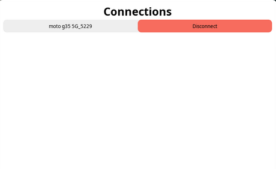

Ewwii - Widgets for everyone made better!
Ewwii (ElKowar's Wacky Widgets improved interface) is a foork of Eww (ElKowar's Wacky Widgets) which is a widget system made in Rust, which lets you create your own widgets similarly to how you can in AwesomeWM.
Strength of Ewwii over Eww:
- Full-fledged scripting & expressions
- User-defined widget trees & composition
- Built-in configuration libraries
- Builtin tooling for better developer experience
- Full control over reactive updates (user defines if widget should update dynamically)
Ewwii is configured in Rhai and themed using CSS or SCSS, it is easy to customize and is powerful and dynamic. The main goal of Ewwii is to make configuration easy and to give the user all the power that they need.
Rhai is not just a basic markup language. It is a full embeddable scripting language! This makes ewwii's configuration even more flexible and powerful.
Whether you're building a tiling-friendly status bar, a floating dashboard, or a themed control panel, Ewwii gives you the tools to design it, script it, and make it your own.
Getting Started
Getting starting with Ewwii. This section will cover how you can install and use ewwii.
Installation
The first step of using Ewwii is installing it. You would need to have the following prerequesties installed on your system to build/install ewwii.
Prerequesties:
- rustc
- cargo
Rather than with your system package manager, I strongly recommend installing it using rustup.
Additionally, eww requires some dynamic libraries to be available on your system. The exact names of the packages that provide these may differ depending on your distribution. The following list of package names should work for arch linux:
Packages (click here)
- gtk3 (libgdk-3, libgtk-3)
- gtk-layer-shell (only on Wayland)
- pango (libpango)
- gdk-pixbuf2 (libgdk_pixbuf-2)
- libdbusmenu-gtk3
- cairo (libcairo, libcairo-gobject)
- glib2 (libgio, libglib-2, libgobject-2)
- gcc-libs (libgcc)
- glibc
Note that you will most likely need the -devel variants of your distro's packages to be able to compile ewwii.
Building
Once you have the prerequisites ready, you're ready to install and build ewwii.
First clone the repo:
git clone https://github.com/Ewwii-sh/ewwii
cd ewwii
Then build:
cargo build --release --no-default-features --features x11
NOTE: When you're on Wayland, build with:
cargo build --release --no-default-features --features=wayland
Running ewwii
Once you've built it you can now run it by entering:
cd target/release
Then make the Eww binary executable:
chmod +x ./ewwii
Then to run it, enter:
./ewwii daemon
./ewwii open <window_name>
Installing via package managers
If you don't want to go through the very tedious task of cloning and building ewwii, you can install it using Cargo (Rust crate manager).
You can run the following command to install ewwii from cargo:
cargo install --git https://github.com/Ewwii-sh/ewwii
Configuration & Syntax
This section introduces the foundational systems that define how you configure your UI, express logic, and work with dynamic data in Rahi (Ewwii's configuration language).
The configuration model is imparative by nature but will be used in a declarative format that is made to make configuring ewwii easy as well as to provide a logical way of configuring. You'll also work with special built in functions and modules that expose live system state and other information.
We'll cover:
- The structure of configuration files
- Embedding expressions within properties and attributes
- Accessing and using built-in variables
- Interpolation, scoping, and reactivity rules
If you're coming from EWW's Yuck, expect similarities in structure but with much more flexibility and logical programming.
Writing your ewwii configuration
(For a list of all built-in widgets (i.e. box, label, button), see Widget Documentation.)
Ewwii is configured using a language called Rhai.
Using rhai, you declare the structure and content of your widgets, the geometry, position, and behavior of any windows,
as well as any state and data that will be used in your widgets.
Rhai is based around imparative syntax, which you may know from programming languages like C, Rust etc.
If you're using vim, you can make use of vim-rhai for editor support.
If you're using VSCode, you can get syntax highlighting and formatting from vscode-rhai.
Additionally, any styles are defined in CSS or SCSS (which is mostly just slightly improved CSS syntax).
While ewwii supports a significant portion of the CSS you know from the web,
not everything is supported, as ewwii relies on GTK's own CSS engine.
Notably, some animation features are unsupported,
as well as most layout-related CSS properties such as flexbox, float, absolute position or width/height.
To get started, you'll need to create two files: ewwii.rhai and ewwii.scss (or ewwii.css, if you prefer).
These files must be placed under $XDG_CONFIG_HOME/ewwii (this is most likely ~/.config/ewwii).
Now that those files are created, you can start writing your first widget!
Creating your first window
Firstly, you will need to create a top-level window. Here, you configure things such as the name, position, geometry, and content of your window.
Let's look at an example window definition:
enter([ // Add all defwindow inside enter. Enter is the root of the config.
defwindow("example", #{
monitor: 0,
windowtype: "dock",
stacking: "fg",
wm_ignore: false,
geometry: #{
x: "0%",
y: "2px",
width: "90%",
height: "30px",
anchor: "top center"
},
reserve: #{ distance: "40px" side: "top" }
}, label(#{ text: "example content" }))
])
Here, we are defining a window named example, which we then define a set of properties for. Additionally, we set the content of the window to be the text "example content".
You can now open your first window by running ewwii open example! Glorious!
defwindow-properties
| Property | Description |
|---|---|
monitor | Which monitor this window should be displayed on. See below for details. |
geometry | Geometry of the window. |
monitor-property
This field can be:
- the string
<primary>, in which case ewwii tries to identify the primary display (which may fail, especially on wayland) - an integer, declaring the monitor index
- the name of the monitor
- a string containing a JSON-array of monitor matchers, such as:
'["<primary>", "HDMI-A-1", "PHL 345B1C", 0]'. Ewwii will try to find a match in order, allowing you to specify fallbacks.
geometry-properties
| Property | Description |
|---|---|
x, y | Position of the window. Values may be provided in px or %. Will be relative to anchor. |
width, height | Width and height of the window. Values may be provided in px or %. |
anchor | Anchor-point of the window. Either center or combinations of top, center, bottom and left, center, right. |
resizable | Whether to allow resizing the window or not. Eiither true or false. |
Depending on if you are using X11 or Wayland, some additional properties exist:
X11
| Property | Description |
|---|---|
stacking | Where the window should appear in the stack. Possible values: fg, bg. |
wm_ignore | Whether the window manager should ignore this window. This is useful for dashboard-style widgets that don't need to interact with other windows at all. Note that this makes some of the other properties not have any effect. Either true or false. |
reserve | Specify how the window manager should make space for your window. This is useful for bars, which should not overlap any other windows. |
windowtype | Specify what type of window this is. This will be used by your window manager to determine how it should handle your window. Possible values: normal, dock, toolbar, dialog, desktop. Default: dock if reserve is specified, normal otherwise. |
Wayland
| Property | Description |
|---|---|
stacking | Where the window should appear in the stack. Possible values: fg, bg, overlay, bottom. |
exclusive | Whether the compositor should reserve space for the window automatically. Either true or false. If true :anchor has to include center. |
focusable | Whether the window should be able to be focused. This is necessary for any widgets that use the keyboard to work. Possible values: none, exclusive and ondemand. |
namespace | Set the wayland layersurface namespace ewwii uses. Accepts a string value. |
Your first widget
While our bar is already looking great, it's a bit boring. Thus, let's add some actual content!
fn greeter(name) {
return box(#{
orientation: "horizontal",
halign: "center"
}, [
button(#{ onclick: `notify-send 'Hello' 'Hello, ${name}'`, label: "Greet" })
]);
};
To show this, let's replace the text in our window definition with a call to this new widget:
enter([
defwindow(
"example",
#{
// ... properties omitted
},
greeter("Bob")
),
]);
There is a lot going on here, so let's step through this.
We are creating a function named greeter and a function is equal to a component that returns a child (widget). So function has two uses: one to return a component, and the other to do a set of functions.
And this function takes one parameters, called name. The name parameter must be provided or else, you should emit it. Rhai does allow adding optional parameters, but we will talk about it later for the sake of beginners who are in-experienced with imprative programming languages.
Now inside the function, we declare the body of our widget that we are returning. We make use of a box, which we set a couple properties of.
We need this box, as a function can only ever contain a single widget - otherwise,
ewwii would not know if it should align them vertically or horizontally, how it should space them, and so on.
Thus, we wrap multiple children in a box.
This box then contains a button.
In that button's onclick property, we refer to the provided name using string-interpolation syntax: `${name}`. It is not possible to use a variable within a "" or '' just like javascript. You can learn more about it here.
To then use our widget, we call the function that provides the widget with the necessary parameters passed.
As you may have noticed, we are using a couple predefined widgets here. These are all listed and explained in the widgets chapter.
Fundamentals
Ewwii uses Rhai as its configuration language. But instead of just pure Rhai, ewwii has its own layout that users should follow to create widgets using Rhai. And you may be wondering why ewwii has a "custom" layout instead of allowing users to just use pure Rhai. It's good question and the reason why ewwii has a custom layout is because it tries to remove unnecessary complexity.
The full reasons for this layout wont be explained much more because it goes way deeper than just "decreasing complexity".
For more information about Rhai, you can read their documentation.
Widgets and their parameters
Each widget in ewwii is a function (e.g: button(#{...}) is a function call to create a button). So each one requires its own parameters.
For example, defwindow expects a String, Properties, and a function call that returns a widget.
Example:
enter([
// the string here (the text in "") is the name of the window
// the content in #{} is the properties
// and the 3rd `root_widget()` call is the function that returns a child.
// defwindow cant have children in [] directly, but it expects a function returning it for it.
defwindow("example", #{
monitor: 0,
windowtype: "dock",
stacking: "fg",
wm_ignore: false,
geometry: #{
x: "0%",
y: "2px",
width: "90%",
height: "30px",
anchor: "top center"
},
reserve: #{ distance: "40px" side: "top" }
}, root_widget())
])
This is not that complex once you know the parameters of defwindow as most of the other widgets only take in properties or optinally children. Poll/Listen are the only things that is similar to defwindow and you will learn about it later in the variables chapter.
The root
It is an important concept that users must know to go forward with this documentaiton. Ewwii's Rhai layout is made to be logical and powerful, so the user is given access the root of the entire widget system.
The root is defined as enter() and it is where you should write defwindow.
Here is an example:
enter([
defwindow("example", #{
monitor: 0,
windowtype: "dock",
stacking: "fg",
wm_ignore: false,
geometry: #{
x: "0%",
y: "2px",
width: "90%",
height: "30px",
anchor: "top center"
},
reserve: #{ distance: "40px" side: "top" }
}, root_widget())
])
Now that you saw this example, you may be wondering why we are doing enter([]) instead of enter(). That is due to another fundamental concept in ewwii which is very important. You will learn about it in the properties and child definition section.
Semi-colons
Semi-colon is an important character in Rhai. Just like programming languages like JavaScript, Java, Rust etc.
You can use the following link to read about semi-colons in the Rhai book as they have an awesome documentation.
https://rhai.rs/book/ref/statements.html#statements
Properties and child definition
The part where most people get confused is the use of [] and #{}. Let's get into what those are and how you can use them.
The [] is used for adding children to a widget.
Example:
fn greeter(foo) {
return box(#{
orientation: "horizontal",
halign: "center"
}, [
// the `[]` holds a button which is the child widget of the box widget
// each element in a `[]` should end in a comma (,) instead of a semi-colon (;).
button(#{ onclick: `notify-send '${foo}'`, label: "baz" }),
label(#{ text: "example" }),
]);
};
The #{} works similar to the [] but, it is used to add properties into the widget.
Example:
fn greeter(foo) {
// the `#{}` holds the properties of the box widget
// each element in a `#{}` should end in a comma (,) instead of a semi-colon (;).
return box(#{
orientation: "horizontal",
halign: "center"
}, [
// properties are assigned to both button and label using the #{}.
button(#{ onclick: `notify-send '${foo}'`, label: "baz" }),
label(#{ text: "example" }),
]);
};
Variables
Now that you feel sufficiently greeted by your bar, you may realize that showing data like the time and date might be even more useful than having a button that greets you.
To implement dynamic content in your widgets, you make use of variables.
All variables are only locally available so you would need to pass it around using function parameters. And whenever the variable changes, the value in the widget will update!
Static variables
In Rhai, all variables are dynamically typed bindings to values. You can define variables using let, pass them as function parameters.
Basic variables (let)
let foo = "value";
This is the simplest type of variable.
Basic variables don't ever change automatically, if you need a dynamic variable, you can use built in functions like poll() and listen() to register dynamic values which we will talk about in the following section.
Dynamic variables
Just having static variables that wont update is pretty limiting. So, ewwii has two built in functions to register dynamic variables that can change according to the command.
Polling variables (poll)
enter([
poll("var_name", #{
// It is recommended to have initial property passed.
// If not provided, it will default to no value which may cause problems when used.
// You can pass something like "" if you want no initial value.
initial: "inital value",
interval: "2s",
cmd: "date +%H:%M:%S", // command to execute
});
])
A polling variable is a variable which runs a provided shell-script repeatedly, in a given interval.
This may be the most commonly used type of variable.
They are useful to access any quickly retrieved value repeatedly,
and thus are the perfect choice for showing your time, date, as well as other bits of information such as pending package updates, weather, and battery level.
But it is important to note that these variables are locally available only in enter (a.k.a the root) and you need to pass it to other functions with something like some_fn(foo) when you want to use a polled variable.
To externally update a polling variable, ewwii update can be used like with basic variables to assign a value. Learn more about ewwii update.
Listening variables (listen)
enter([
listen("foo", #{
initial: "whatever",
cmd: "tail -F /tmp/some_file",
});
])
Listening variables might be the most confusing of the bunch.
A listening variable runs a script once, and reads its output continously.
Whenever the script outputs a new line, the value will be updated to that new line.
In the example given above, the value of foo will start out as "whatever", and will change whenever a new line is appended to /tmp/some_file.
These are particularly useful when you want to apply changes instantaneously when an operation happens if you have a script that can monitor some value on its own. Volume, brightness, workspaces that get added/removed at runtime, monitoring currently focused desktop/tag, etc. are the most common usecases of this type of variable. These are particularly efficient and should be preffered if possible.
For example, the command xprop -spy -root _NET_CURRENT_DESKTOP writes the currently focused desktop whenever it changes.
Another example usecase is monitoring the currently playing song with playerctl: playerctl --follow metadata --format {{title}}.
enter([]) block.
If `poll` or `listen` is defined outside the enter([]) block, then they simply will be ignored.
Passing variables
As we discussed earlier, all variables are only available locally. So, you would need to pass it around from the current scope.
Here is an example of how it is done:
let foo = "example";
enter([
poll("time", #{
initial: "inital value",
interval: "2s",
cmd: "date +%H:%M:%S",
}),
defwindow("1", #{}, wont_work()), // wont work
defwindow("2", #{}, will_work(time, foo)) // will work
])
// Here we have 2 variables named "time" (registered dynamically by poll) and foo (a static variable)
// here is an example of something that wont
fn wont_work() {
return box(#{}, [ label(#{ text: time }), label(#{ text: foo }) ]);
}
// here is an example of something that will work
fn will_work(time, foo) { // time and foo is passed from `enter([])`
return box(#{}, [ label(#{ text: time }), label(#{ text: foo }) ]);
}
The Rhai Expression Engine
Ewwii uses Rhai as its core expression and scripting engine. This means your configuration is more than just static values or simple substitutions—it’s real code, and you can use it anywhere dynamic behavior is needed.
Rhai expressions can:
- Perform logic and branching (
if,match,? :) - Handle mathematical calculations and string operations
- Access nested data from arrays, maps, or JSON
- Run custom functions
- Be used directly in layout definitions, widget attributes, and style rules
Unlike Yuck, where expressions were embedded in { ... } or ${ ... }, Rhai treats expressions as native. They don’t need to be wrapped in special delimiters. If you can write it in Rhai, it just works.
Example
let value = 12 + foo * 10;
box(#{
class: "baz"
orientation: "h",
}, [
button(#{
class: button_active ? "active" : "inactive",
on_click: "toggle_thing",
label: `Some math: ${value}`,
}),
]);
Core Features
Rhai supports a wide range of expression capabilities:
- Mathematics:
+,-,*,/,% - Comparisons:
==,!=,<,>,<=,>= - Boolean logic:
&&,||,! - Conditionals:
if/else, ternary (cond ? a : b) - Regex matching:
=~operator (Rust-style regex) - Optional access:
?.and?.[index] - Data structures: maps/arrays (
obj.field,arr[3],map["key"]) - Function calls: standard and Ewwii-specific built-ins (see below)
- String interpolation:
`Value is ${value}`(standard Rhai feature)
Note
Rhai only allows string interpolation only for the strings that are quoted in `` similar to JavaScript.
Learn more about it here.
Common Built-in Functions
💡 You may recognize some of these from the old expression system—but now they're just Rhai functions.
Examples include:
round(),floor(),ceil(),powi(),powf()min(),max(),sin(),cos(), etc.replace(),matches(),captures()strlength(),arraylength(),objectlength()jq()– run jaq-compatible filters on JSON dataget_env()– read environment variablesformattime()– format UNIX timestampsformatbytes()– format file sizes (IEC or SI)
Dynamic Usage
Because expressions are just Rhai, you can now write real logic inline or break it into reusable functions:
fn status_text(active) {
return active ? "enabled" : "disabled";
}
label({
text: `Status: ${status_text(system_active)}`
});
TL;DR
If you’ve used scripting languages like JavaScript or Lua, you’ll feel at home. Rhai gives you real control—not just interpolation tricks.
Rendering and Best Practices
Rendering children in your widgets
As your configuration grows, you might want to improve its structure by factoring out pieces into reusable functions.
In Ewwii’s Rhai-based configuration system, you can define wrapper functions that return widgets and accept a children parameter (or any parameter that you prefer), just like built-in widgets such as box() or button().
Here's an example of a custom container that adds a label before its children:
fn labeled_container(name, children = []) {
return box(#{ class: "container" }, [label(#{text: name})] + children)
}
You can call it like this:
labeled_container("foo", [
button(#{ onclick: "notify-send hey ho", label: "Click me" }),
]);
Because children are just a list of widgets, you can also write functions that structure them however you'd like. For example, here's a layout that places the first two children side by side:
fn two_boxes(children = []) {
return box(#{}, [
box(#{ class: "first" }, [children[0]]),
box(#{ class: "second" }, [children[1]])
]);
}
And call it like this:
two_boxes([label(#{ text: "First" }), label(#{ text: "Second" })]);
If a child is missing (e.g., children[1] doesn't exist), make sure to handle that gracefully or document the expected number of children.
Window ID
In some cases you may want to use the same window configuration for multiple widgets, e.g. for multiple windows. This is where arguments and ids come in.
Firstly let us start off with ids. An id can be specified in the open command
with --id, by default the id will be set to the name of the window
configuration. These ids allow you to spawn multiple of the same windows. So
for example you can do:
ewwii open my_bar --screen 0 --id primary
ewwii open my_bar --screen 1 --id secondary
Generating a list of widgets from array using for
If you want to display a list of values, you can use the for-Element to fill a container with a list of elements generated from a JSON-array.
let my_array = [1, 2, 3];
// Then, inside your widget, you can use
box(#{}, [
for entry in my_array {
button(#{ onclick: `notify-send 'click' 'button ${entry}'`, label: entry.to_string() })
}
])
This can be useful in many situations, for example when generating a workspace list from an array representation of your workspaces.
In many cases, this can be used instead of literal, and should most likely be preferred in those cases.
Splitting up your configuration
As time passes, your configuration might grow larger and larger. Luckily, you can easily split up your configuration into multiple files!
There are two options to achieve this:
Using import/export
// in ./foo/baz.rhai
/// Note: all functions are automatically exported.
fn greet() { return "Greetings!" }
let PI = 3.14159
export PI; // we need to export variables manually
// in ./ewwii.rhai
import "foo/baz" as example;
print(example::greet()); // Greetings!
print(example::PI); // 3.14159
A rhai file may import the contents of any other rhai file that they export. For this, make use of the import directive. If you are exporting a variable/function, make use the export directive.
Using a separate ewwii configuration directory
If you want to separate different widgets even further, you can create a new ewwii config folder anywhere else.
Then, you can tell ewwii to use that configuration directory by passing every command the --config /path/to/your/config/dir flag.
Make sure to actually include this in all your ewwii calls, including ewwii kill, eww logs, etc.
This launches a separate instance of the ewwii daemon that has separate logs and state from your main ewwii configuration.
ewwii --config "/path/to/your/config/dir"
Widgets
Widgets are the building blocks of your interface. Each widget represents a visual element—text, images, containers, interactive components—that can be composed, styled, and updated dynamically.
This section introduces:
- The basic anatomy of a widget definition
- How widgets are laid out within windows
- The attributes and properties available to each widget type
- Patterns for building reusable or dynamic widget trees
You’ll also learn how widget properties interact with the expression language and how reactivity is handled across updates.
Widgets & Parameters
Below is a list of available widgets and the parameters each accepts.
Widget Functions
These functions correspond to actual GTK widgets and render visible UI elements.
- box:
props,children - centerbox:
props,children - eventbox:
props,children - tooltip:
props,children - circular_progress:
props - graph:
props - transform:
props - slider:
props - progress:
props - image:
props - button:
props - label:
props - input:
props - calendar:
props - color_button:
props - expander:
props,children - color_chooser:
props - combo_box_text:
props - checkbox:
props - revealer:
props,children - scroll:
props,children - overlay:
props,children - stack:
props,children
Utility Functions
These are not visible UI widgets but are essential for layout, data binding, or dynamic behavior.
- defwindow:
string,props,children - poll:
props - listen:
props
Let's recall
propsparam: Defined in#{}
childrenparam: Defined in[]Both of these are discussed in chapter 2.2
Widget Properties
widget
These properties apply to all widgets, and can be used anywhere!
Properties
class:stringcss class namevalign:stringhow to align this vertically. possible values: "fill", "baseline", "center", "start", "end"halign:stringhow to align this horizontally. possible values: "fill", "baseline", "center", "start", "end"vexpand:boolshould this container expand vertically. Default: falsehexpand:boolshould this widget expand horizontally. Default: falsewidth:intwidth of this elementheight:intheight of this elementactive:boolIf this widget can be interacted withtooltip:stringtooltip text (on hover)visible:boolvisibility of the widgetstyle:stringinline scss style applied to the widgetcss:stringscss code applied to the widget
combo-box-text
Properties
items:vecItems displayed in the combo boxtimeout:durationtimeout of the command. Default: "200ms"onchange:stringruns when an item is selected, replacing{}with the item
expander
Properties
name:stringname of the expanderexpanded:boolsets whether it's expanded
revealer
Properties
transition:stringanimation name ("slideright", "slideleft", etc.)reveal:boolwhether the child is revealedduration:durationhow long the transition lasts. Default: "500ms"
checkbox
Properties
checked:boolinitial checked statetimeout:durationcommand timeout. Default: "200ms"onchecked:stringcommand when checkedonunchecked:stringcommand when unchecked
color-button
Properties
use_alpha:booluse alpha channelonchange:stringcommand on color selecttimeout:durationDefault: "200ms"
color-chooser
Properties
use_alpha:booluse alpha channelonchange:stringcommand on color selecttimeout:durationDefault: "200ms"
slider
Properties
flipped:boolreverse directionmarks:stringdraw marksdraw_value:boolshow valuevalue_pos:stringwhere to show value ("left", "right", etc.)round_digits:intnumber of decimal placesvalue:floatcurrent valuemin:floatminimum valuemax:floatmaximum valuetimeout:durationDefault: "200ms"onchange:stringcommand on change (use{}for value)orientation:stringlayout direction
progress
Properties
flipped:boolreverse directionvalue:floatprogress (0–100)orientation:stringlayout direction
input
NOTE: This widget exposes a special environment variable INPUT_VAL to the commands specified in onchange and onaccept.
Properties
value:stringcurrent textonchange:stringcommand on change;INPUT_VALcontains the new valuetimeout:durationDefault: "200ms"onaccept:stringcommand on Enter;INPUT_VALcontains the new valuepassword:boolobscure input
button
Properties
timeout:durationDefault: "200ms"onclick:stringcommand on activationonmiddleclick:stringcommand on middle clickonrightclick:stringcommand on right click
image
Properties
path:stringimage file pathimage_width:intimage widthimage_height:intimage heightpreserve_aspect_ratio:boolkeep aspect ratiofill_svg:stringfill color for SVGsicon:stringtheme icon nameicon_size:stringsize of the icon
box
Properties
spacing:intspacing between childrenorientation:stringdirection of childrenspace_evenly:booldistribute children evenly
overlay
Properties
None
tooltip
Properties
None listed
centerbox
Properties
orientation:stringdirection of layout
scroll
Properties
hscroll:boolallow horizontal scrollingvscroll:boolallow vertical scrollingpropagate_natural_height:booluse the natural height if true
eventbox
Properties
timeout:durationDefault: "200ms"onscroll:stringcommand on scroll ({}becomes direction)onhover:stringcommand on hoveronhoverlost:stringcommand on hover exitcursor:stringcursor typeondropped:stringcommand on drop ({}is URI)dragvalue:stringURI to drag from this widgetdragtype:stringtype to drag ("file", "text")onclick:stringcommand on clickonmiddleclick:stringcommand on middle clickonrightclick:stringcommand on right click
label
Properties
text:stringtext to displaytruncate:booltruncate textlimit_width:intmax characters to showtruncate_left:booltruncate beginningshow_truncated:boolshow truncationunindent:boolstrip leading spacesmarkup:stringPango markupwrap:boolwrap textangle:floatrotation anglegravity:stringtext gravityxalign:floathorizontal alignmentyalign:floatvertical alignmentjustify:stringtext justificationwrap_mode:stringwrap mode ("word", "char", etc.)lines:intmax lines (−1 = unlimited)
literal
Properties
content:stringraw yuck
calendar
Properties
day:floatselected daymonth:floatselected monthyear:floatselected yearshow_details:boolshow detailsshow_heading:boolshow headingshow_day_names:boolshow day namesshow_week_numbers:boolshow week numbersonclick:stringcommand with{0},{1},{2}for day/month/yeartimeout:durationDefault: "200ms"
stack
Properties
selected:intchild indextransition:stringanimation namesame_size:boolequal child size
transform
Properties
rotate:floatrotation angletransform_origin_x:stringtransform origin xtransform_origin_y:stringtransform origin ytranslate_x:stringshift xtranslate_y:stringshift yscale-x:stringscale xscale-y:stringscale y
circular-progress
Properties
value:float0–100 progressstart_at:floatstart percentagethickness:floatline thicknessclockwise:booldirection
graph
Properties
value:floatcurrent valuethickness:floatline thicknesstime_range:durationduration to trackmin:floatminimum valuemax:floatmaximum value
Theming & UI
This section focuses on visual styling and user interface customization. The core visual layer is built atop GTK, allowing deep integration with system themes while also enabling custom overrides through SCSS-style syntax.
We'll explore:
- How GTK theming works under the hood
- Styling your widgets using theme classes and custom CSS
- Layout implications of theme decisions (e.g., spacing, margins, z-order)
Whether you're trying to match your system's look or building a highly customized UI, this section gives you the tools to style confidently.
Working with GTK
Gtk Theming
Ewwii is styled in GTK CSS.
You can use Vanilla CSS or SCSS to make theming even easier. The latter is compiled into CSS for you.
If you don't know any way to style something check out the GTK CSS Overview wiki,
the GTK CSS Properties Overview wiki ,
or use the GTK-Debugger.
If you have NO clue about how to do CSS, check out some online guides or tutorials.
SCSS is very close to CSS, so if you know CSS you'll have no problem learning SCSS.
GTK Debugger
The debugger can be used for a lot of things, especially if something doesn't work or isn't styled right.
To open the GTK debugger, simply run
ewwii inspector
If a style or something similar doesn't work, you can click on the icon in the top left to select the thing that isn't being styled correctly.
Then you can click on the drop down menu in the top right corner and select CSS Nodes. Here you will see everything about styling it, CSS Properties, and how it's structured.
Styling Widgets
Ewwii also allows writing inline styles to widgets using the style property. These styles are then applied at runtime using GTK's CSS system.
Example:
fn foo() {
return box(#{
style: "color: black; background-color: #fff;",
}, [ label(#{ text: "baz" }) ]);
}
This example makes the text color of all child widgets of box to black and sets the background color of the box to white (
#fffis the hexadecimal for white).
Modules
Modules undoubtedly are one of the most powerful features in Rhai. They provide infinite extensibility to ewwii.
Every module follows the syntax:
import "std::env" as env;
let home = env::get_home_dir(); // returns `$HOME` env var value
This allows you to write expressive, modular Rhai code with functions grouped logically under std or custom namespaces.
User-Defined Modules
User-defined modules allow you to organize your code by splitting it into separate, reusable files. This makes large projects easier to maintain and understand.
Exporting Items from a Module
In Rhai modules:
- Functions are automatically exported by default. You do not need to use
exportfor functions. - Variables, constants, and objects must be exported manually using the
exportkeyword.
// File: ./foo/baz.rhai
/// A function that is automatically exported
fn greet() {
return "Greetings!"
}
/// A private function, NOT exported automatically
private fn foo() {
return "This function is hidden and not exported"
}
/// A variable
let PI = 3.14159;
// Export the variable explicitly
export PI;
Tip: Only variables, constants, and objects require the export keyword. Functions are always available unless marked private. More info
Importing a Module
You can import a module using the import keyword:
// File: ./ewwii.rhai
import "foo/baz" // just runs the script without importing it.
import "foo/baz" as example; // runs the script and imports it into example.
// Access exported items
print(example::greet()); // Greetings!
print(example::PI); // 3.14159
Tip: Always use the as keyword to import a script as a module with the name you desire.
Notes
- Functions are automatically exported unless explicitly marked
private. - Variables, constants, and objects must be exported using the
exportkeyword. askeyword is important in animportstatement if you want to import the variables and functions in a Rhai file.
Global Builtin Rhai Functions
These functions are built-in and available globally, meaning they can be used directly without any import.
For example, to get the value of PI, you can simply write:
let x = PI();
This section covers all the core functions provided by Rhai that are ready to use out of the box.
global
Namespace: global
op !=
op u32 != u32 -> bool
op Map != Map -> bool
op i8 != i8 -> bool
op int != f32 -> bool
op i128 != i128 -> bool
op i32 != i32 -> bool
op Array != Array -> bool
op Instant != Instant -> bool
op f32 != int -> bool
op u16 != u16 -> bool
op u128 != u128 -> bool
op u8 != u8 -> bool
op i16 != i16 -> bool
op u64 != u64 -> bool
op f32 != f32 -> boolThe operator == is used to compare property values and must be defined,
otherwise false is assumed.
fn +
fn +(x: i8) -> i8
fn +(x: float) -> float
fn +(x: i32) -> i32
fn +(x: int) -> int
fn +(x: f32) -> f32
fn +(x: i16) -> i16
fn +(x: i128) -> i128
fn +(x: u128, y: u128) -> u128
fn +(utf8: Blob, string: String) -> String
fn +(x: u16, y: u16) -> u16
fn +(timestamp: Instant, seconds: int) -> Instant
fn +(array1: Array, array2: Array) -> Array
fn +(x: f32, y: int) -> f32
fn +(x: i32, y: i32) -> i32
fn +(x: f32, y: f32) -> f32
fn +(character: char, string: String) -> String
fn +(x: u64, y: u64) -> u64
fn +(x: i16, y: i16) -> i16
fn +(x: u8, y: u8) -> u8
fn +(map1: Map, map2: Map) -> Map
fn +(item: ?, string: String) -> String
fn +(string: String, item: ?) -> String
fn +(string: String, mut item: ?) -> String
fn +(string: String, character: char) -> String
fn +(item: ?, string: String) -> String
fn +(x: u32, y: u32) -> u32
fn +(x: i128, y: i128) -> i128
fn +(string: String, utf8: Blob) -> String
fn +(x: int, y: f32) -> f32
fn +(x: i8, y: i8) -> i8
fn +(timestamp: Instant, seconds: float) -> Instant
fn +(string1: String, string2: String) -> String fn +=
fn +=(map: Map, map2: Map)
fn +=(string: String, item: ?)
fn +=(string: String, character: char)
fn +=(string: String, mut item: ?)
fn +=(string: String, utf8: Blob)
fn +=(timestamp: Instant, seconds: float)
fn +=(string1: String, string2: String)
fn +=(timestamp: Instant, seconds: int) fn -
fn -(x: float) -> float
fn -(x: i8) -> i8
fn -(x: i32) -> i32
fn -(x: int) -> int
fn -(x: f32) -> f32
fn -(x: i128) -> i128
fn -(x: i16) -> i16
fn -(x: i32, y: i32) -> i32
fn -(timestamp1: Instant, timestamp2: Instant) -> ?
fn -(x: f32, y: int) -> f32
fn -(x: u16, y: u16) -> u16
fn -(timestamp: Instant, seconds: int) -> Instant
fn -(x: u128, y: u128) -> u128
fn -(x: u8, y: u8) -> u8
fn -(x: i16, y: i16) -> i16
fn -(x: u64, y: u64) -> u64
fn -(x: f32, y: f32) -> f32
fn -(x: u32, y: u32) -> u32
fn -(x: i8, y: i8) -> i8
fn -(timestamp: Instant, seconds: float) -> Instant
fn -(x: int, y: f32) -> f32
fn -(x: i128, y: i128) -> i128 fn -=
fn -=(timestamp: Instant, seconds: float)
fn -=(timestamp: Instant, seconds: int) op <
op u32 < u32 -> bool
op i128 < i128 -> bool
op int < f32 -> bool
op i8 < i8 -> bool
op u128 < u128 -> bool
op u16 < u16 -> bool
op Instant < Instant -> bool
op f32 < int -> bool
op i32 < i32 -> bool
op f32 < f32 -> bool
op u64 < u64 -> bool
op i16 < i16 -> bool
op u8 < u8 -> bool op <=
op f32 <= f32 -> bool
op u64 <= u64 -> bool
op i16 <= i16 -> bool
op u8 <= u8 -> bool
op u128 <= u128 -> bool
op u16 <= u16 -> bool
op f32 <= int -> bool
op i32 <= i32 -> bool
op Instant <= Instant -> bool
op i128 <= i128 -> bool
op int <= f32 -> bool
op i8 <= i8 -> bool
op u32 <= u32 -> bool op ==
op i8 == i8 -> bool
op int == f32 -> bool
op i128 == i128 -> bool
op u32 == u32 -> bool
op Map == Map -> bool
op u8 == u8 -> bool
op i16 == i16 -> bool
op u64 == u64 -> bool
op f32 == f32 -> bool
op i32 == i32 -> bool
op Array == Array -> bool
op Instant == Instant -> bool
op f32 == int -> bool
op u16 == u16 -> bool
op u128 == u128 -> boolThe operator == is used to compare property values and must be defined,
otherwise false is assumed.
op >
op u8 > u8 -> bool
op i16 > i16 -> bool
op u64 > u64 -> bool
op f32 > f32 -> bool
op i32 > i32 -> bool
op Instant > Instant -> bool
op f32 > int -> bool
op u16 > u16 -> bool
op u128 > u128 -> bool
op i8 > i8 -> bool
op int > f32 -> bool
op i128 > i128 -> bool
op u32 > u32 -> bool op >=
op u64 >= u64 -> bool
op f32 >= f32 -> bool
op u8 >= u8 -> bool
op i16 >= i16 -> bool
op u16 >= u16 -> bool
op u128 >= u128 -> bool
op i32 >= i32 -> bool
op f32 >= int -> bool
op Instant >= Instant -> bool
op int >= f32 -> bool
op i128 >= i128 -> bool
op i8 >= i8 -> bool
op u32 >= u32 -> bool get/set FnPtr.is_anonymous
get FnPtr.is_anonymous -> bool get/set Instant.elapsed
get Instant.elapsed -> ? get/set Range<int>.is_empty
get Range<int>.is_empty -> bool get/set Range<int>.is_exclusive
get Range<int>.is_exclusive -> bool get/set Range<int>.is_inclusive
get Range<int>.is_inclusive -> bool get/set RangeInclusive<int>.end
get RangeInclusive<int>.end -> int get/set RangeInclusive<int>.is_empty
get RangeInclusive<int>.is_empty -> bool get/set RangeInclusive<int>.is_exclusive
get RangeInclusive<int>.is_exclusive -> bool get/set RangeInclusive<int>.is_inclusive
get RangeInclusive<int>.is_inclusive -> bool get/set RangeInclusive<int>.start
get RangeInclusive<int>.start -> int get/set String.bytes
get String.bytes -> int get/set String.chars
get String.chars -> CharsStream fn abs
fn abs(x: i32) -> i32
fn abs(x: float) -> float
fn abs(x: i8) -> i8
fn abs(x: i16) -> i16
fn abs(x: i128) -> i128
fn abs(x: int) -> int
fn abs(x: f32) -> f32 fn acosh
fn acosh(x: float) -> float fn all
fn all(array: Array, filter: FnPtr) -> bool
fn all(array: Array, filter: String) -> bool fn append
fn append(blob: Blob, string: String)
fn append(blob1: Blob, blob2: Blob)
fn append(array: Array, new_array: Array)
fn append(blob: Blob, character: char)
fn append(string: String, mut item: ?)
fn append(string: String, utf8: Blob)
fn append(blob: Blob, value: int) fn as_string
fn as_string(blob: Blob) -> StringThe byte stream must be valid UTF-8, otherwise an error is raised.
fn asinh
fn asinh(x: float) -> float fn atan
fn atan(x: float) -> float
fn atan(x: float, y: float) -> float fn atanh
fn atanh(x: float) -> float fn bits
fn bits(value: int) -> BitRange
fn bits(value: int, range: Range<int>) -> BitRange
fn bits(value: int, from: int) -> BitRange
fn bits(value: int, range: RangeInclusive<int>) -> BitRange
fn bits(value: int, from: int, len: int) -> BitRange fn blob
fn blob() -> Blob
fn blob(len: int) -> Blob
fn blob(len: int, value: int) -> Blob fn bytes
fn bytes(string: String) -> int fn ceiling
fn ceiling(x: float) -> float fn chars
fn chars(string: String) -> CharsStream
fn chars(string: String, range: Range<int>) -> CharsStream
fn chars(string: String, start: int) -> CharsStream
fn chars(string: String, range: RangeInclusive<int>) -> CharsStream
fn chars(string: String, start: int, len: int) -> CharsStream fn chop
fn chop(array: Array, len: int)
fn chop(blob: Blob, len: int)- If
len≤ 0, the array is cleared. - If
len≥ length of array, the array is not modified.
fn clear
fn clear(string: String)
fn clear(blob: Blob)
fn clear(map: Map)
fn clear(array: Array) fn contains
fn contains(map: Map, property: String) -> bool
fn contains(string: String, character: char) -> bool
fn contains(range: RangeInclusive<int>, value: int) -> bool
fn contains(blob: Blob, value: int) -> bool
fn contains(string: String, match_string: String) -> bool
fn contains(range: Range<int>, value: int) -> bool
fn contains(array: Array, value: ?) -> bool fn cosh
fn cosh(x: float) -> float fn crop
fn crop(string: String, start: int)
fn crop(string: String, range: RangeInclusive<int>)
fn crop(string: String, range: Range<int>)
fn crop(string: String, start: int, len: int)- If
start< 0, position counts from the end of the string (-1is the last character). - If
start< -length of string, the string is not modified. - If
start≥ length of string, the entire string is cleared.
fn debug
fn debug() -> String
fn debug(item: ?) -> String
fn debug(array: Array) -> String
fn debug(f: FnPtr) -> String
fn debug(number: float) -> String
fn debug(character: char) -> String
fn debug(unit: ?) -> String
fn debug(value: bool) -> String
fn debug(map: Map) -> String
fn debug(string: String) -> String
fn debug(number: f32) -> String fn dedup
fn dedup(array: Array)
fn dedup(array: Array, comparer: String)
fn dedup(array: Array, comparer: FnPtr)The operator == is used to compare elements and must be defined,
otherwise false is assumed.
fn drain
fn drain(blob: Blob, range: RangeInclusive<int>) -> Blob
fn drain(array: Array, range: RangeInclusive<int>) -> Array
fn drain(array: Array, filter: FnPtr) -> Array
fn drain(array: Array, filter: String) -> Array
fn drain(array: Array, range: Range<int>) -> Array
fn drain(blob: Blob, range: Range<int>) -> Blob
fn drain(map: Map, filter: FnPtr) -> Map
fn drain(blob: Blob, start: int, len: int) -> Blob
fn drain(array: Array, start: int, len: int) -> Array fn elapsed
fn elapsed(timestamp: Instant) -> ? fn end
fn end(range: Range<int>) -> int
fn end(range: RangeInclusive<int>) -> int fn ends_with
fn ends_with(string: String, match_string: String) -> bool fn exit
fn exit() -> ?
fn exit(value: ?) -> ? fn extract
fn extract(array: Array, range: Range<int>) -> Array
fn extract(blob: Blob, range: Range<int>) -> Blob
fn extract(blob: Blob, range: RangeInclusive<int>) -> Blob
fn extract(array: Array, range: RangeInclusive<int>) -> Array
fn extract(blob: Blob, start: int) -> Blob
fn extract(array: Array, start: int) -> Array
fn extract(blob: Blob, start: int, len: int) -> Blob
fn extract(array: Array, start: int, len: int) -> Array fn fill_with
fn fill_with(map: Map, map2: Map) fn filter
fn filter(map: Map, filter: FnPtr) -> Map
fn filter(array: Array, filter_func: String) -> Array
fn filter(array: Array, filter: FnPtr) -> Array fn find
fn find(array: Array, filter: FnPtr) -> ?
fn find(array: Array, filter: FnPtr, start: int) -> ? fn find_map
fn find_map(array: Array, filter: FnPtr) -> ?
fn find_map(array: Array, filter: FnPtr, start: int) -> ? get/set float.ceiling
get float.ceiling -> float get/set float.floor
get float.floor -> float get/set float.fraction
get float.fraction -> float get/set float.is_finite
get float.is_finite -> bool get/set float.is_infinite
get float.is_infinite -> bool get/set float.is_nan
get float.is_nan -> bool get/set float.round
get float.round -> float fn floor
fn floor(x: float) -> float fn for_each
fn for_each(array: Array, map: FnPtr) fn get
fn get(string: String, index: int) -> ?
fn get(blob: Blob, index: int) -> int
fn get(array: Array, index: int) -> ?
fn get(map: Map, property: String) -> ?- If
index< 0, position counts from the end of the string (-1is the last character). - If
index< -length of string, zero is returned. - If
index≥ length of string, zero is returned.
fn get_bit
fn get_bit(value: int, bit: int) -> boolIf bit < 0, position counts from the MSB (Most Significant Bit).
fn get_bits
fn get_bits(value: int, range: RangeInclusive<int>) -> int
fn get_bits(value: int, range: Range<int>) -> int
fn get_bits(value: int, start: int, bits: int) -> int fn get_fn_metadata_list
fn get_fn_metadata_list() -> Array
fn get_fn_metadata_list(name: String) -> Array
fn get_fn_metadata_list(name: String, params: int) -> Array fn hypot
fn hypot(x: float, y: float) -> float fn index_of
fn index_of(string: String, find_string: String) -> int
fn index_of(string: String, character: char) -> int
fn index_of(array: Array, value: ?) -> int
fn index_of(array: Array, filter: String) -> int
fn index_of(array: Array, filter: FnPtr) -> int
fn index_of(string: String, find_string: String, start: int) -> int
fn index_of(array: Array, value: ?, start: int) -> int
fn index_of(array: Array, filter: String, start: int) -> int
fn index_of(array: Array, filter: FnPtr, start: int) -> int
fn index_of(string: String, character: char, start: int) -> int fn insert
fn insert(blob: Blob, index: int, value: int)
fn insert(array: Array, index: int, item: ?)- If
index< 0, position counts from the end of the BLOB (-1is the last byte). - If
index< -length of BLOB, the byte value is added to the beginning of the BLOB. - If
index≥ length of BLOB, the byte value is appended to the end of the BLOB.
Only the lower 8 bits of the value are used; all other bits are ignored.
fn is_anonymous
fn is_anonymous(fn_ptr: FnPtr) -> bool fn is_empty
fn is_empty(array: Array) -> bool
fn is_empty(range: Range<int>) -> bool
fn is_empty(string: String) -> bool
fn is_empty(blob: Blob) -> bool
fn is_empty(map: Map) -> bool
fn is_empty(range: RangeInclusive<int>) -> bool fn is_even
fn is_even(x: i8) -> bool
fn is_even(x: u32) -> bool
fn is_even(x: u16) -> bool
fn is_even(x: i32) -> bool
fn is_even(x: u128) -> bool
fn is_even(x: u8) -> bool
fn is_even(x: int) -> bool
fn is_even(x: i128) -> bool
fn is_even(x: i16) -> bool
fn is_even(x: u64) -> bool fn is_exclusive
fn is_exclusive(range: Range<int>) -> bool
fn is_exclusive(range: RangeInclusive<int>) -> bool fn is_inclusive
fn is_inclusive(range: Range<int>) -> bool
fn is_inclusive(range: RangeInclusive<int>) -> bool fn is_infinite
fn is_infinite(x: float) -> bool fn is_nan
fn is_nan(x: float) -> bool fn is_odd
fn is_odd(x: u64) -> bool
fn is_odd(x: i16) -> bool
fn is_odd(x: i128) -> bool
fn is_odd(x: int) -> bool
fn is_odd(x: u8) -> bool
fn is_odd(x: u128) -> bool
fn is_odd(x: i32) -> bool
fn is_odd(x: u16) -> bool
fn is_odd(x: u32) -> bool
fn is_odd(x: i8) -> bool fn is_zero
fn is_zero(x: u128) -> bool
fn is_zero(x: int) -> bool
fn is_zero(x: u8) -> bool
fn is_zero(x: f32) -> bool
fn is_zero(x: i128) -> bool
fn is_zero(x: i16) -> bool
fn is_zero(x: u64) -> bool
fn is_zero(x: i8) -> bool
fn is_zero(x: float) -> bool
fn is_zero(x: u32) -> bool
fn is_zero(x: u16) -> bool
fn is_zero(x: i32) -> bool fn len
fn len(array: Array) -> int
fn len(string: String) -> int
fn len(blob: Blob) -> int
fn len(map: Map) -> int fn log
fn log(x: float) -> float
fn log(x: float, base: float) -> float fn make_lower
fn make_lower(string: String)
fn make_lower(character: char) fn make_upper
fn make_upper(string: String)
fn make_upper(character: char) fn map
fn map(array: Array, map: FnPtr) -> Array
fn map(array: Array, mapper: String) -> Array fn max
fn max(x: i8, y: i8) -> i8
fn max(x: int, y: int) -> int
fn max(string1: String, string2: String) -> String
fn max(x: float, y: f32) -> float
fn max(x: i128, y: i128) -> i128
fn max(x: int, y: f32) -> f32
fn max(x: u32, y: u32) -> u32
fn max(x: f32, y: float) -> float
fn max(x: float, y: int) -> float
fn max(x: i16, y: i16) -> i16
fn max(x: u8, y: u8) -> u8
fn max(x: float, y: float) -> float
fn max(x: f32, y: f32) -> f32
fn max(char1: char, char2: char) -> char
fn max(x: u64, y: u64) -> u64
fn max(x: f32, y: int) -> f32
fn max(x: int, y: float) -> float
fn max(x: i32, y: i32) -> i32
fn max(x: u128, y: u128) -> u128
fn max(x: u16, y: u16) -> u16 fn min
fn min(x: u128, y: u128) -> u128
fn min(x: u16, y: u16) -> u16
fn min(x: f32, y: int) -> f32
fn min(x: i32, y: i32) -> i32
fn min(x: int, y: float) -> float
fn min(x: float, y: float) -> float
fn min(x: f32, y: f32) -> f32
fn min(char1: char, char2: char) -> char
fn min(x: u64, y: u64) -> u64
fn min(x: float, y: int) -> float
fn min(x: i16, y: i16) -> i16
fn min(x: u8, y: u8) -> u8
fn min(x: f32, y: float) -> float
fn min(x: u32, y: u32) -> u32
fn min(x: i128, y: i128) -> i128
fn min(x: int, y: f32) -> f32
fn min(x: i8, y: i8) -> i8
fn min(x: int, y: int) -> int
fn min(string1: String, string2: String) -> String
fn min(x: float, y: f32) -> float fn mixin
fn mixin(map: Map, map2: Map) fn pad
fn pad(string: String, len: int, character: char)
fn pad(blob: Blob, len: int, value: int)
fn pad(array: Array, len: int, item: ?)
fn pad(string: String, len: int, padding: String)If len ≤ length of string, no padding is done.
fn parse_be_float
fn parse_be_float(blob: Blob, range: RangeInclusive<int>) -> float
fn parse_be_float(blob: Blob, range: Range<int>) -> float
fn parse_be_float(blob: Blob, start: int, len: int) -> float- If number of bytes in
range< number of bytes forFLOAT, zeros are padded. - If number of bytes in
range> number of bytes forFLOAT, extra bytes are ignored.
fn parse_be_int
fn parse_be_int(blob: Blob, range: RangeInclusive<int>) -> int
fn parse_be_int(blob: Blob, range: Range<int>) -> int
fn parse_be_int(blob: Blob, start: int, len: int) -> int- If number of bytes in
range< number of bytes forINT, zeros are padded. - If number of bytes in
range> number of bytes forINT, extra bytes are ignored.
let b = blob();
b += 1; b += 2; b += 3; b += 4; b += 5;
let x = b.parse_be_int(1..=3); // parse three bytes
print(x.to_hex()); // prints "0203040000...00"
fn parse_int
fn parse_int(string: String) -> int
fn parse_int(string: String, radix: int) -> int fn parse_le_float
fn parse_le_float(blob: Blob, range: Range<int>) -> float
fn parse_le_float(blob: Blob, range: RangeInclusive<int>) -> float
fn parse_le_float(blob: Blob, start: int, len: int) -> float- If number of bytes in
range< number of bytes forFLOAT, zeros are padded. - If number of bytes in
range> number of bytes forFLOAT, extra bytes are ignored.
fn parse_le_int
fn parse_le_int(blob: Blob, range: RangeInclusive<int>) -> int
fn parse_le_int(blob: Blob, range: Range<int>) -> int
fn parse_le_int(blob: Blob, start: int, len: int) -> int- If number of bytes in
range< number of bytes forINT, zeros are padded. - If number of bytes in
range> number of bytes forINT, extra bytes are ignored.
let b = blob();
b += 1; b += 2; b += 3; b += 4; b += 5;
let x = b.parse_le_int(1..=3); // parse three bytes
print(x.to_hex()); // prints "040302"
fn pop
fn pop(array: Array) -> ?
fn pop(string: String) -> ?
fn pop(blob: Blob) -> int
fn pop(string: String, len: int) -> StringIf the array is empty, () is returned.
fn print
fn print() -> String
fn print(array: Array) -> String
fn print(item: ?) -> String
fn print(number: float) -> String
fn print(unit: ?) -> String
fn print(character: char) -> String
fn print(value: bool) -> String
fn print(map: Map) -> String
fn print(number: f32) -> String
fn print(string: String) -> String fn push
fn push(blob: Blob, value: int)
fn push(array: Array, item: ?)Only the lower 8 bits of the value are used; all other bits are ignored.
fn range
fn range(from: u16, to: u16) -> Range<u16>
fn range(range: Range<i8>, step: i8) -> StepRange<i8>
fn range(from: u128, to: u128) -> Range<u128>
fn range(range: Range<int>, step: int) -> StepRange<int>
fn range(range: Range<u32>, step: u32) -> StepRange<u32>
fn range(range: Range<u16>, step: u16) -> StepRange<u16>
fn range(from: i32, to: i32) -> Range<i32>
fn range(range: Range<i16>, step: i16) -> StepRange<i16>
fn range(from: u64, to: u64) -> Range<u64>
fn range(range: Range<i32>, step: i32) -> StepRange<i32>
fn range(range: Range<u64>, step: u64) -> StepRange<u64>
fn range(range: Range<float>, step: float) -> StepRange<float>
fn range(from: u8, to: u8) -> Range<u8>
fn range(from: i16, to: i16) -> Range<i16>
fn range(from: u32, to: u32) -> Range<u32>
fn range(from: i128, to: i128) -> Range<i128>
fn range(range: Range<i128>, step: i128) -> StepRange<i128>
fn range(range: Range<u8>, step: u8) -> StepRange<u8>
fn range(from: int, to: int) -> Range<int>
fn range(from: i8, to: i8) -> Range<i8>
fn range(range: Range<u128>, step: u128) -> StepRange<u128>
fn range(from: u64, to: u64, step: u64) -> StepRange<u64>
fn range(from: u16, to: u16, step: u16) -> StepRange<u16>
fn range(from: u8, to: u8, step: u8) -> StepRange<u8>
fn range(from: u128, to: u128, step: u128) -> StepRange<u128>
fn range(from: i128, to: i128, step: i128) -> StepRange<i128>
fn range(from: i32, to: i32, step: i32) -> StepRange<i32>
fn range(from: float, to: float, step: float) -> StepRange<float>
fn range(from: i8, to: i8, step: i8) -> StepRange<i8>
fn range(from: i16, to: i16, step: i16) -> StepRange<i16>
fn range(from: int, to: int, step: int) -> StepRange<int>
fn range(from: u32, to: u32, step: u32) -> StepRange<u32> fn reduce
fn reduce(array: Array, reducer: FnPtr) -> ?
fn reduce(array: Array, reducer: String) -> ?
fn reduce(array: Array, reducer: String, initial: ?) -> ?
fn reduce(array: Array, reducer: FnPtr, initial: ?) -> ? fn reduce_rev
fn reduce_rev(array: Array, reducer: FnPtr) -> ?
fn reduce_rev(array: Array, reducer: String) -> ?
fn reduce_rev(array: Array, reducer: FnPtr, initial: ?) -> ?
fn reduce_rev(array: Array, reducer: String, initial: ?) -> ? fn remove
fn remove(map: Map, property: String) -> ?
fn remove(array: Array, index: int) -> ?
fn remove(string: String, character: char)
fn remove(blob: Blob, index: int) -> int
fn remove(string: String, sub_string: String)If the property does not exist, () is returned.
fn replace
fn replace(string: String, find_character: char, substitute_character: char)
fn replace(string: String, find_string: String, substitute_character: char)
fn replace(string: String, find_character: char, substitute_string: String)
fn replace(string: String, find_string: String, substitute_string: String) fn retain
fn retain(array: Array, range: RangeInclusive<int>) -> Array
fn retain(blob: Blob, range: RangeInclusive<int>) -> Blob
fn retain(array: Array, filter: String) -> Array
fn retain(array: Array, filter: FnPtr) -> Array
fn retain(blob: Blob, range: Range<int>) -> Blob
fn retain(array: Array, range: Range<int>) -> Array
fn retain(map: Map, filter: FnPtr) -> Map
fn retain(blob: Blob, start: int, len: int) -> Blob
fn retain(array: Array, start: int, len: int) -> Array fn round
fn round(x: float) -> float fn set
fn set(string: String, index: int, character: char)
fn set(blob: Blob, index: int, value: int)
fn set(array: Array, index: int, value: ?)
fn set(map: Map, property: String, value: ?)- If
index< 0, position counts from the end of the string (-1is the last character). - If
index< -length of string, the string is not modified. - If
index≥ length of string, the string is not modified.
fn set_bit
fn set_bit(value: int, bit: int, new_value: bool)If bit < 0, position counts from the MSB (Most Significant Bit).
fn set_bits
fn set_bits(value: int, range: RangeInclusive<int>, new_value: int)
fn set_bits(value: int, range: Range<int>, new_value: int)
fn set_bits(value: int, bit: int, bits: int, new_value: int) fn shift
fn shift(array: Array) -> ?
fn shift(blob: Blob) -> intIf the array is empty, () is returned.
fn sign
fn sign(x: i8) -> int
fn sign(x: float) -> int
fn sign(x: i32) -> int
fn sign(x: f32) -> int
fn sign(x: int) -> int
fn sign(x: i16) -> int
fn sign(x: i128) -> int0if the number is zero1if the number is positive-1if the number is negative
fn sinh
fn sinh(x: float) -> float fn sleep
fn sleep(seconds: int)
fn sleep(seconds: float) fn some
fn some(array: Array, filter: FnPtr) -> bool
fn some(array: Array, filter: String) -> bool fn sort
fn sort(array: Array)
fn sort(array: Array, comparer: FnPtr)
fn sort(array: Array, comparer: String)All elements in the array must be of the same data type.
fn splice
fn splice(blob: Blob, range: Range<int>, replace: Blob)
fn splice(array: Array, range: Range<int>, replace: Array)
fn splice(blob: Blob, range: RangeInclusive<int>, replace: Blob)
fn splice(array: Array, range: RangeInclusive<int>, replace: Array)
fn splice(blob: Blob, start: int, len: int, replace: Blob)
fn splice(array: Array, start: int, len: int, replace: Array) fn split
fn split(string: String) -> Array
fn split(string: String, delimiter: char) -> Array
fn split(array: Array, index: int) -> Array
fn split(string: String, delimiter: String) -> Array
fn split(blob: Blob, index: int) -> Blob
fn split(string: String, index: int) -> Array
fn split(string: String, delimiter: String, segments: int) -> Array
fn split(string: String, delimiter: char, segments: int) -> Array fn split_rev
fn split_rev(string: String, delimiter: String) -> Array
fn split_rev(string: String, delimiter: char) -> Array
fn split_rev(string: String, delimiter: String, segments: int) -> Array
fn split_rev(string: String, delimiter: char, segments: int) -> Array fn start
fn start(range: RangeInclusive<int>) -> int
fn start(range: Range<int>) -> int fn starts_with
fn starts_with(string: String, match_string: String) -> bool fn sub_string
fn sub_string(string: String, range: Range<int>) -> String
fn sub_string(string: String, start: int) -> String
fn sub_string(string: String, range: RangeInclusive<int>) -> String
fn sub_string(string: String, start: int, len: int) -> String fn take
fn take(value: ?) -> ?The original value is replaced with ().
fn tanh
fn tanh(x: float) -> float fn to_binary
fn to_binary(value: i32) -> String
fn to_binary(value: u16) -> String
fn to_binary(value: u32) -> String
fn to_binary(value: i8) -> String
fn to_binary(value: i16) -> String
fn to_binary(value: i128) -> String
fn to_binary(value: u64) -> String
fn to_binary(value: int) -> String
fn to_binary(value: u8) -> String
fn to_binary(value: u128) -> String fn to_blob
fn to_blob(string: String) -> Blob fn to_chars
fn to_chars(string: String) -> Array fn to_debug
fn to_debug(f: FnPtr) -> String
fn to_debug(number: float) -> String
fn to_debug(item: ?) -> String
fn to_debug(array: Array) -> String
fn to_debug(map: Map) -> String
fn to_debug(string: String) -> String
fn to_debug(number: f32) -> String
fn to_debug(character: char) -> String
fn to_debug(unit: ?) -> String
fn to_debug(value: bool) -> String fn to_float
fn to_float()
fn to_float(x: f32) -> float
fn to_float()
fn to_float()
fn to_float()
fn to_float()
fn to_float()
fn to_float()
fn to_float()
fn to_float()
fn to_float()
fn to_float() fn to_hex
fn to_hex(value: i8) -> String
fn to_hex(value: u32) -> String
fn to_hex(value: u16) -> String
fn to_hex(value: i32) -> String
fn to_hex(value: u128) -> String
fn to_hex(value: int) -> String
fn to_hex(value: u8) -> String
fn to_hex(value: i128) -> String
fn to_hex(value: i16) -> String
fn to_hex(value: u64) -> String fn to_int
fn to_int(x: f32) -> int
fn to_int()
fn to_int()
fn to_int()
fn to_int()
fn to_int()
fn to_int()
fn to_int()
fn to_int(x: float) -> int
fn to_int()
fn to_int()
fn to_int()
fn to_int() fn to_lower
fn to_lower(character: char) -> char
fn to_lower(string: String) -> String fn to_octal
fn to_octal(value: i32) -> String
fn to_octal(value: u16) -> String
fn to_octal(value: u32) -> String
fn to_octal(value: i8) -> String
fn to_octal(value: u64) -> String
fn to_octal(value: i128) -> String
fn to_octal(value: i16) -> String
fn to_octal(value: int) -> String
fn to_octal(value: u8) -> String
fn to_octal(value: u128) -> String fn to_string
fn to_string(number: f32) -> String
fn to_string(string: String) -> String
fn to_string(map: Map) -> String
fn to_string(value: bool) -> String
fn to_string(unit: ?) -> String
fn to_string(character: char) -> String
fn to_string(number: float) -> String
fn to_string(array: Array) -> String
fn to_string(item: ?) -> String fn to_upper
fn to_upper(string: String) -> String
fn to_upper(character: char) -> char fn truncate
fn truncate(array: Array, len: int)
fn truncate(blob: Blob, len: int)
fn truncate(string: String, len: int)- If
len≤ 0, the array is cleared. - If
len≥ length of array, the array is not truncated.
fn values
fn values(map: Map) -> Array fn write_ascii
fn write_ascii(blob: Blob, range: Range<int>, string: String)
fn write_ascii(blob: Blob, range: RangeInclusive<int>, string: String)
fn write_ascii(blob: Blob, start: int, len: int, string: String)Each ASCII character encodes to one single byte in the BLOB. Non-ASCII characters are ignored.
- If number of bytes in
range< length ofstring, extra bytes instringare not written. - If number of bytes in
range> length ofstring, extra bytes inrangeare not modified.
let b = blob(8);
b.write_ascii(1..5, "hello, world!");
print(b); // prints "[0068656c6c000000]"
fn write_be
fn write_be(blob: Blob, range: RangeInclusive<int>, value: int)
fn write_be(blob: Blob, range: RangeInclusive<int>, value: float)
fn write_be(blob: Blob, range: Range<int>, value: float)
fn write_be(blob: Blob, range: Range<int>, value: int)
fn write_be(blob: Blob, start: int, len: int, value: int)
fn write_be(blob: Blob, start: int, len: int, value: float)- If number of bytes in
range< number of bytes forINT, extra bytes inINTare not written. - If number of bytes in
range> number of bytes forINT, extra bytes inrangeare not modified.
let b = blob(8, 0x42);
b.write_be_int(1..=3, 0x99);
print(b); // prints "[4200000042424242]"
fn write_le
fn write_le(blob: Blob, range: RangeInclusive<int>, value: int)
fn write_le(blob: Blob, range: Range<int>, value: float)
fn write_le(blob: Blob, range: Range<int>, value: int)
fn write_le(blob: Blob, range: RangeInclusive<int>, value: float)
fn write_le(blob: Blob, start: int, len: int, value: float)
fn write_le(blob: Blob, start: int, len: int, value: int)- If number of bytes in
range< number of bytes forINT, extra bytes inINTare not written. - If number of bytes in
range> number of bytes forINT, extra bytes inrangeare not modified.
let b = blob(8);
b.write_le_int(1..=3, 0x12345678);
print(b); // prints "[0078563400000000]"
fn write_utf8
fn write_utf8(blob: Blob, range: Range<int>, string: String)
fn write_utf8(blob: Blob, range: RangeInclusive<int>, string: String)
fn write_utf8(blob: Blob, start: int, len: int, string: String)- If number of bytes in
range< length ofstring, extra bytes instringare not written. - If number of bytes in
range> length ofstring, extra bytes inrangeare not modified.
let b = blob(8);
b.write_utf8(1..5, "朝には紅顔ありて夕べには白骨となる");
print(b); // prints "[00e69c9de3000000]"
fn zip
fn zip(array1: Array, array2: Array, map: FnPtr) -> ArrayStd Library Module
These are all the standard modules in ewwii.
Each library in this module is under std::<m>, where <m> is the name of the specific module.
These modules provide essential functionalities that are will be useful for making widgets.
They cover tasks like string manipulation, environmental variable manipuation, running shell commands, and more.
command
Namespace: global/std/command
fn run_and_read
fn run_and_read(cmd: String) -> Stringtext
Namespace: global/std/text
fn to_slug
fn to_slug(text: String) -> String fn truncate_chars
fn truncate_chars(text: String, max_chars: int) -> Stringmonitor
Namespace: global/std/monitor
fn all_resolutions
fn all_resolutions() -> Vec<[int;2]> fn all_resolutions_str
fn all_resolutions_str() -> String fn dimensions
fn dimensions(index: int) -> [int;4] fn dimensions_str
fn dimensions_str(index: int) -> String fn primary_resolution_str
fn primary_resolution_str() -> Stringenv
Namespace: global/std/env
API Library Module
These are all the API modules available in ewwii.
Each library in this module is under api::<m>, where <m> is the name of the specific module.
The API library provides system-level functionality, allowing you to interact with external resources and perform advanced operations. Examples include interacting with Wi-Fi, networking, and more.
wifi
Namespace: global/api/wifi
fn connect
fn connect(ssid: String, password: String) fn connect_without_password
fn connect_without_password(ssid: String) fn current_connection
fn current_connection() -> Map fn get_adapter_connectivity
fn get_adapter_connectivity() -> String fn scan
fn scan() -> Arraylinux
Namespace: global/api/linux
Examples
This section provides hands-on, practical demonstrations of everything covered so far. Real layouts, interactive components, and theming techniques will be used in these examples.
Each example is minimal but complete, focusing on a particular design pattern or technique. You can copy-paste them into your own config to experiment.
Included:
- Common layout patterns (e.g., bars, panels, dashboards)
- Interactive elements like buttons, sliders, toggles
- Theming techniques and tricks to override or enhance GTK styles
If you're stuck or just looking for inspiration, this is your go-to reference.
Starter Bar

A basic starter bar which will be very helpful to beginners, see examples/ewwii-bar.
Installing
This template is regestered in the eii-manifests, so you can install it via eiipm: ewwii's package manager.
Just run the following command and have the template ready in the current working directory in an instant!
eiipm i starter_template
Wifi Manager Template

An advanced ewwii template showcasing api::wifi module, manual nm-cli parsing, and advacned ewwii CLI commands. See the template at Ewwii-sh/ewifi_gui_template.
Installing
This template is regestered in the eii-manifests, so you can install it via eiipm: ewwii's package manager.
Just run the following command and have the template ready in the current working directory!
eiipm i ewifi_gui_template
Advanced Commands
Now that you all are familiar with ewwii and may be making awesome widgets, lets get to know about some advanced commands in ewwii, that makes it even more flexible and powerful.
In this section, we will cover:
- How to use advanced commands
- Limitations of these advanced commands
- And finally, solutions to these limitations
ewwii update
The update command refreshes the widgets rendered in a specified window. It allows you to immediately reflect changes in your widget configuration.
Example:
# Update a single window
ewwii update --window "my_awesome_widget"
# Short form
ewwii update -w "my_awesome_widget"
Limitation: poll and listen handlers
A known limitation of ewwii update is that it does not preserve variables created by poll or listen handlers. When you run ewwii update, these variables are reset to their initial values.
Solution: Injecting variables with --inject-vars
To prevent certain variables from being reset, you can manually inject values into the configuration using the --inject-vars argument. This allows you to explicitly set variable values during an update.
# Long form
ewwii update --window "my_awesome_widget" --inject-vars "VAR1=bar,VAR2=foo2"
# Short form
ewwii update -w "my_awesome_widget" --inject-vars "VAR1=ewwii,VAR2=baz1"
Note:
--inject-varsdoes not automatically capture the current state ofpollorlistenvariables. You must explicitly provide the values you want.
Best Practices
- Consider using
--inject-varswhen your widgets rely onpollorlistento avoid default resets. - Update multiple widgets by running
ewwii updatefor each window separately. - Be explicit and consistent with variable values to avoid unexpected behavior.
ewwii call-fns
The call-fns command allows you to call Rhai functions directly from the command line. This can be useful for triggering specific functionality in your widget configuration without updating or interacting with the GUI.
Note: All variables created by
pollorlistenhandlers will default to their initial values when calling functions. They cannot be preserved.
Example:
# Call a single Rhai function
ewwii call-fns "my_function(32, 21)"
# Call multiple functions
ewwii call-fns "first_function('string')" "second_function()"
This will execute the specified functions in the context of your current configuration.
Limitation: Main configuration
However, there is one limitation in call-fns. It can only see and call functions defined within your main configuration (i.e ewwii.rhai file).
Solution: Creating wrappers
But, there is one solution though! You can call external functions from functions defined in main.
Example:
// in external.rhai
fn awesome_fn() {
print("Awesome fn triggered!");
}
// in ewwii.rhai
fn call_awesome_fn() {
import "external" as external;
external::awesome_fn();
}
Now you can run ewwii call-fns "call-awesome_fn()" and get "Awesome fn triggered!".
Troubleshooting
Here you will find help if something doesn't work. If the issue isn't listed here, please open an issue on the GitHub repo.
Ewwii does not compile
- Make sure that you are compiling ewwii using a recent version of rust (run
rustup updateto be sure you have the latest version available) - Make sure you have all the necessary dependencies. If there are compile-errors, the compiler will tell you what you're missing.
Ewwii does not work on Wayland
- Make sure you compiled ewwii with the
--no-default-features --features=waylandflags. - Make sure that you're not trying to use X11-specific features (these are (hopefully) explicitly specified as such in the documentation).
My configuration is not loaded correctly
- Make sure the
ewwii.rhaiandewwii.(s)cssfiles are in the correct places. - Sometimes, ewwii might fail to load your configuration as a result of a configuration error. Make sure your configuration is valid.
Something isn't styled correctly!
Check the GTK-Debugger to get more insight into what styles GTK is applying to which elements.
General issues
You should try the following things before opening an issue or doing more specialized troubleshooting:
- Kill the ewwii daemon by running
ewwii killand re-open your window with the--debug-flag to get additional log output. - Now you can take a look at the logs by running
ewwii logs. - Use
ewwii stateto see the state of all variables. - Use
ewwii debugto see the structure of your widget and other information. - Update to the latest ewwii version.
- Sometimes hot reloading doesn't work. In that case, you can make use of
ewwii reloadmanually.
Remember, if your issue isn't listed here, open an issue on the GitHub repo.